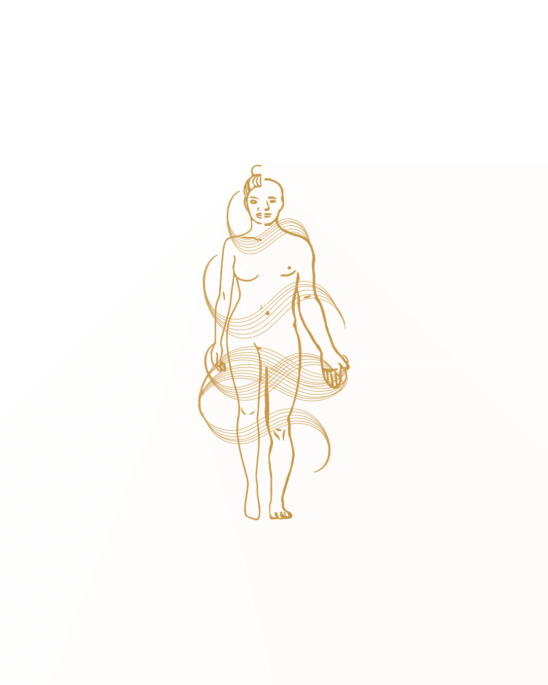

Meine Services
Bioresonanz
Körperliche Harmonie durch vitalisierende Frenquenzen! Harmonie ist wichtig für den Inneren Frieden und die innere Ruhe.
Kinesiologie
Die Kinesiologie konzentriert sich nicht auf bestimmte Symptome, sondern testet und korrigiert Ungleichgewichte im ganzen Körper-Geist-System.
Astrologie

Astrologie ist die Deutung von Zusammenhängen zwischen astronomischen Ereignissen bzw. Gestirnskonstellationen und irdischen Vorgängen.